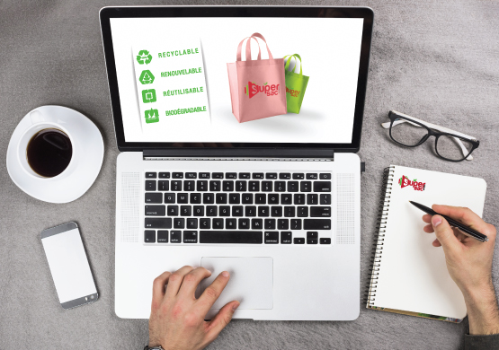

<div class="container">

  <div class="row">
    <div class="col-lg-6 col-md-6">

      <div id="myCarousel" class="carousel slide" data-ride="carousel">
        <!-- Indicators -->
        <ol class="carousel-indicators hidden-xs">
          <li data-target="#myCarousel" data-slide-to="0" class="active"></li>
          <li data-target="#myCarousel" data-slide-to="1" class=""></li>


        </ol>
        <div class="carousel-inner">
          <!-- Item 1 -->
          <div class="item active">
            <center> </center>
          </div>
          <!-- #Item 1 -->

          <!-- Item 2 -->
          <div class="item">
            <center> </center>

          </div>


        </div>

      </div>


    </div>

    <div class="col-lg-6 col-md-6">


      <h3>Notre Mission</h3>
      <p align="justify">Nous disposons d'une gamme étendue de machines de haute technologie permettant la fabrication
        de plusieurs modèles de sacs et d’emballage en plastiques et en bio plastique: sacs à bretelles, sacs à
        poignée souple, sacs poubelle, sac de congélation.
        Nos produits sont conformes aux nouvelles règlementations relatives à la protection de l’environnement et
        peuvent être ajustés selon les attentes de nos clients.

      </p>
      <h3>Notre vision</h3>
      <p>Afin d’assurer notre développement, nous visons : </br>

        • l’amélioration continue de notre savoir-faire, nos moyens et nos processus de production,</br>
        • maintenir la satisfaction de nos clients,</br>
        • la conformité aux exigences nationales et internationales,</br>
        • la prévention de la pollution par des produits écologiques.</br>
      </p>
      <p></p>
    </div>

  </div>

</div>